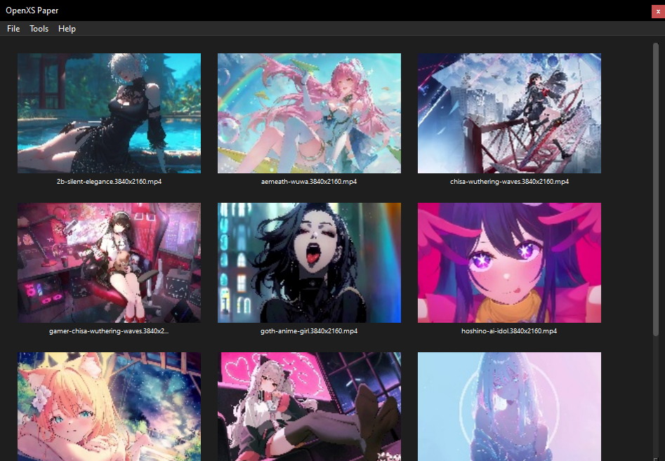
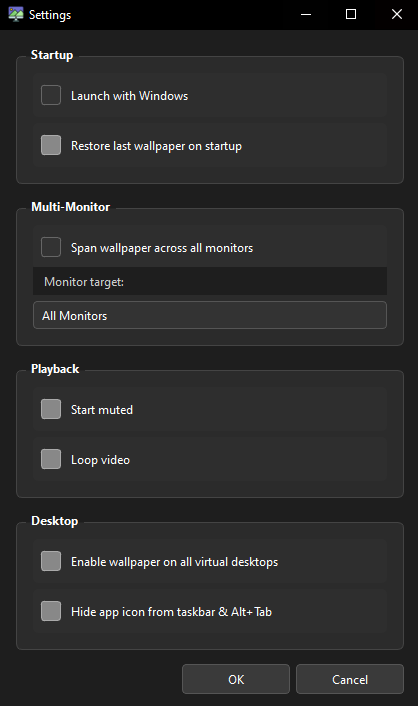

OpenXS Paper by Shirushi Mori — plays any MP4, MKV, AVI or WebM video directly on your desktop, looping seamlessly with zero flicker, zero bloat.


Renders directly on the Windows desktop layer (WorkerW) — sits behind all windows, just like a real wallpaper.
Ping-pong double-buffer: two players swap instantly at the loop point. No black frame, no seek stutter — ever.
Thumbnail grid of all your wallpapers. Ctrl+Scroll to zoom. Drag & drop files or folders straight in.
Remembers your last wallpaper, last folder, mute/loop state, and full dashboard across every restart.
Minimize to tray, restore with a double-click. Quick mute, loop toggle, and quit from the tray menu.
Auto-start with Windows, multi-monitor target, mute and loop defaults — all in one clean dialog.
One command. The script handles Python, venv, and all dependencies automatically.
Requires winget (built into Windows 11) or Chocolatey. Python 3.12 is installed automatically if missing.
git clone https://github.com/shirushimori/openxs-paper.git && cd openxs-paper && start.bat
Or just download the repo as a ZIP, extract it, and double-click start.bat.
Supports apt (Ubuntu/Debian), pacman (Arch), dnf (Fedora). Python 3.12 is installed automatically if missing.
git clone https://github.com/shirushimori/openxs-paper.git && cd openxs-paper && chmod +x start.sh && ./start.sh
Requires Homebrew. Python 3.12 is installed automatically via brew install python@3.12.
git clone https://github.com/shirushimori/openxs-paper.git && cd openxs-paper && chmod +x start.sh && ./start.sh
If you prefer to set things up yourself:
git clone https://github.com/shirushimori/openxs-paper.git cd openxs-paper python3.12 -m venv .venv # Windows .venv\Scripts\pip install -r requirements.txt .venv\Scripts\python main.py # Linux / macOS .venv/bin/pip install -r requirements.txt .venv/bin/python main.py
Windows has a hidden WorkerW window between the desktop icons and the wallpaper layer.
OpenXS Paper sends a 0x052C message to Progman to expose it,
then re-parents the PyQt6 video widget into it — so the video renders as the actual desktop background.
Two QMediaPlayer instances (A and B) are stacked on the same screen rect.
While A plays, B is pre-loaded and waiting. When A hits EndOfMedia, B is raised
and plays instantly — no seek, no reload, no black frame. Then A reloads in the background
ready for the next swap.
OpenCV grabs the first frame of each video, resizes it, and saves it as a
.jpg in assets/cache/. On subsequent launches the cache
is reused so the dashboard loads instantly regardless of how many wallpapers you have.
All state is written to config/settings.json — last wallpaper, last folder,
full dashboard list, mute/loop state, and settings dialog values.
Everything is restored exactly as you left it on next launch.